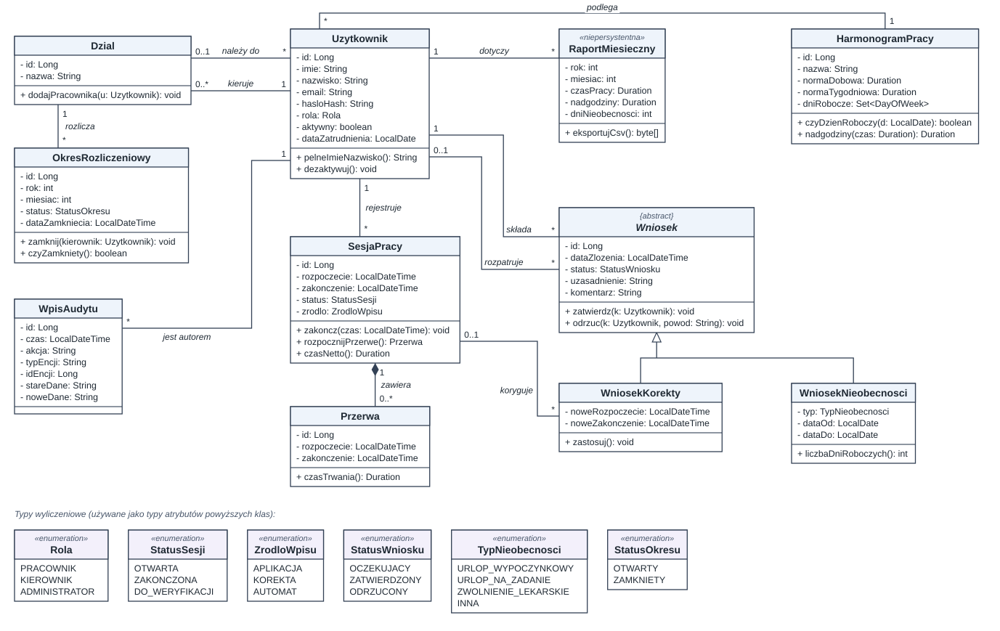

6. Diagram przypadków użycia

Rysunek 1. Diagram przypadków użycia systemu rejestracji czasu pracy
| Politechnika Świętokrzyska | |
| Studia niestacjonarne (semestr zimowy) | |
| Modelowanie i analiza systemów informatycznych – Projekt | 2026/2027 |
| Kamień milowy 1 – Analiza i projekt systemu Temat: System rejestracji czasu pracy | |
| Imię i nazwisko: Szymon Dudek [Imię Nazwisko] | Grupa: 1IZ22B |
| Dzień oddania: [dd.mm.2026] | |
Tematem projektu jest system rejestracji czasu pracy, czyli aplikacja internetowa, w której pracownicy firmy rejestrują rozpoczęcie i zakończenie pracy oraz przerwy. Na tej podstawie system prowadzi elektroniczną ewidencję czasu pracy, sam wylicza czas przepracowany i nadgodziny oraz obsługuje wnioski o poprawienie wpisu i o nieobecność.
W wielu małych i średnich firmach czas pracy zapisuje się dziś na papierowych listach obecności albo w Excelu. Łatwo tam o pomyłkę lub dopisanie godzin „na oko”, nie widać, kto i kiedy coś zmienił, a przygotowanie miesięcznego zestawienia dla kadr wymaga ręcznego liczenia. Projektowany system zastępuje te rozwiązania jednym, wiarygodnym źródłem danych o czasie pracy.
Głównym celem jest dostarczenie firmie prostego narzędzia, które pozwala rzetelnie rejestrować czas pracy pracowników i rozliczać go co miesiąc. Cele szczegółowe są następujące:
System składa się z sześciu obszarów funkcjonalnych, które przedstawia tabela 1.
| Obszar | Zakres |
|---|---|
| Logowanie i konta | Logowanie, role (pracownik, kierownik, administrator), zakładanie, edycja i dezaktywacja kont, przypisanie pracownika do działu i harmonogramu pracy. |
| Rejestracja czasu pracy | Rozpoczęcie pracy, przerwy, zakończenie pracy, bieżący status pracownika, automatyczne zamykanie niezakończonych sesji. |
| Ewidencja | Podgląd wpisów z podziałem na dni i miesiące, sumy czasu pracy, liczenie nadgodzin według harmonogramu. |
| Wnioski | Wnioski o poprawienie wpisu (np. gdy pracownik zapomni się „odbić”) i o nieobecność (urlop, zwolnienie lekarskie) oraz ich rozpatrywanie przez kierownika. |
| Raporty | Miesięczny raport czasu pracy pracownika i działu, eksport do CSV i PDF, zamykanie okresu rozliczeniowego. |
| Administracja i audyt | Działy, harmonogramy (normy czasu pracy), ręczne poprawianie wpisów, dziennik zdarzeń. |
Aby zakres projektu był realny, system nie obejmuje: naliczania wynagrodzeń i list płac (raport CSV można zaimportować do programu kadrowo-płacowego), czytników kart RFID i biometrii, śledzenia lokalizacji pracownika, układania grafików zmianowych ani osobnej aplikacji mobilnej. Strona działa jednak w przeglądarce telefonu.
Najważniejsze pojęcia używane w dalszej części dokumentacji wyjaśnia tabela 2.
| Pojęcie | Znaczenie |
|---|---|
| Sesja pracy | Okres od kliknięcia „Rozpocznij pracę” do kliknięcia „Zakończ pracę”. W ciągu dnia może być kilka sesji. |
| Przerwa | Czas w trakcie sesji, w którym pracownik nie pracuje. Jest odejmowany od czasu sesji. |
| Czas netto | Czas trwania sesji po odjęciu przerw. |
| Harmonogram pracy | Normy obowiązujące pracownika: ile godzin dziennie i tygodniowo ma pracować i w które dni. |
| Nadgodziny | Czas pracy powyżej dziennej normy z harmonogramu pracownika. |
| Okres rozliczeniowy | Miesiąc, za który rozliczany jest czas pracy. Po zamknięciu wpisów z tego miesiąca nie można zmieniać. |
| Korekta | Poprawienie istniejącego wpisu lub dodanie brakującego, zawsze z uzasadnieniem. |
| Dziennik zdarzeń | Rejestr wszystkich zmian w danych o czasie pracy: kto, kiedy, co zmienił, stan przed zmianą i po niej. Wpisów w nim nie można edytować. |
System będzie aplikacją internetową złożoną z dwóch części: strony dla użytkowników (frontend) oraz serwera z logiką i bazą danych (backend). Obie części komunikują się przez REST API, a cała logika biznesowa znajduje się na serwerze. Najważniejsze założenia projektowe:
Działanie systemu opiera się na regułach biznesowych przedstawionych w tabeli 3.
| ID | Reguła |
|---|---|
| RB-01 | Pracownik może mieć w danej chwili najwyżej jedną otwartą sesję pracy i jedną otwartą przerwę. |
| RB-02 | Przerwę można rozpocząć tylko w trakcie sesji. Zakończenie sesji kończy też trwającą przerwę. |
| RB-03 | Nadgodziny w danym dniu to czas netto pomniejszony o dzienną normę (jeżeli wynik jest dodatni). Praca w dniu wolnym w całości liczy się jako nadgodziny. |
| RB-04 | Sesja niezakończona do 23:59 jest zamykana automatycznie i oznaczana jako wymagająca sprawdzenia. |
| RB-05 | Kierownik widzi i rozpatruje tylko dane pracowników swojego działu. Nie może rozpatrywać własnych wniosków. |
| RB-06 | Wpisów z zamkniętego okresu rozliczeniowego nie można zmieniać ani składać do nich wniosków o korektę. |
| RB-07 | Każda ręczna zmiana wpisu wymaga uzasadnienia i trafia do dziennika zdarzeń. |
| RB-08 | Wnioski o nieobecność tego samego pracownika nie mogą nachodzić na siebie terminami. |
Wybrane technologie i narzędzia przedstawia tabela 4.
| Element | Technologia | Do czego służy |
|---|---|---|
| Backend | Java 21, Spring Boot 3 (Web, Data JPA, Security, Validation) | Logika biznesowa, REST API, bezpieczeństwo i walidacja danych. |
| Frontend | React 18, TypeScript, Vite, React Router | Strona działająca w przeglądarce na komputerze i telefonie. |
| Baza danych | PostgreSQL 16, migracje Flyway | Przechowywanie danych. Reguła RB-01 jest dodatkowo pilnowana przez unikalny indeks w bazie. |
| Bezpieczeństwo | Spring Security, JWT, BCrypt | Logowanie, uprawnienia ról, bezpieczne zapisywanie haseł. |
| Dokumentacja API | springdoc-openapi (Swagger UI) | Automatycznie generowany opis wszystkich endpointów. |
| Testy | JUnit 5, Mockito, JaCoCo, Vitest | Testy logiki biznesowej i pomiar pokrycia kodu testami. |
| Uruchamianie | Maven, npm, Docker Compose | Uruchomienie całego systemu jednym poleceniem. |
| Kontrola wersji | Git, GitHub | Wspólne repozytorium zespołu, historia zmian i wkładu każdej osoby. |
| Metryki kodu (KM3) | SonarQube, JaCoCo, IntelliJ IDEA | Liczba klas i metod, liczba linii kodu, złożoność, graf zależności. |
Z systemu będą korzystać trzy grupy osób. Czwartym aktorem jest wbudowany zegar systemowy, który uruchamia zadania automatyczne. Aktorów opisuje tabela 5.
| Aktor | Kto to jest | Funkcja w systemie |
|---|---|---|
| Pracownik | Każda osoba zatrudniona w firmie, której czas pracy jest rejestrowany | Rejestruje rozpoczęcie i zakończenie pracy oraz przerwy, przegląda swoją ewidencję i nadgodziny, składa wnioski o korektę i o nieobecność. Widzi tylko swoje dane. |
| Kierownik | Kierownik działu (sam też jest pracownikiem) | Ma wszystkie funkcje pracownika, a dodatkowo przegląda ewidencję swojego działu, rozpatruje wnioski pracowników, generuje raporty miesięczne i zamyka miesiąc. |
| Administrator | Osoba odpowiedzialna za system, np. z działu kadr lub IT | Zarządza kontami i rolami, działami oraz harmonogramami pracy, ręcznie poprawia wpisy (z uzasadnieniem) i przegląda dziennik zdarzeń. |
| Zegar systemowy | Zadanie uruchamiane automatycznie przez serwer | Codziennie o 23:59 zamyka sesje, których pracownicy nie zakończyli, i oznacza je do sprawdzenia. |
Kierownik dziedziczy po pracowniku (relacja generalizacji), bo sam też rejestruje swój czas pracy. Dzięki temu na diagramie nie trzeba drugi raz rysować jego połączeń z przypadkami użycia UC01–UC07. Administrator jest osobnym aktorem, ponieważ uprawnienia administracyjne i kierownicze celowo rozdzielono.
Na rysunku 1 przedstawiono diagram przypadków użycia. Relacja «include» oznacza, że dany przypadek zawsze wykonuje inny, np. każda korekta wpisu zawsze zapisuje zdarzenie w dzienniku. Relacja «extend» oznacza czynność opcjonalną, np. eksport raportu do pliku jest możliwy, ale niewymagany. Wszystkie przypadki użycia opisuje tabela 6.
| ID | Przypadek użycia | Aktor | Opis |
|---|---|---|---|
| UC01 | Zaloguj się | Pracownik, Kierownik, Administrator | Logowanie e-mailem i hasłem. |
| UC02 | Rozpocznij pracę | Pracownik | Rozpoczęcie nowej sesji pracy z godziną zapisaną przez serwer. |
| UC03 | Rozpocznij / zakończ przerwę | Pracownik | Przerwa w trakcie trwającej sesji. |
| UC04 | Zakończ pracę | Pracownik | Zamknięcie sesji i wyliczenie czasu netto. |
| UC05 | Przeglądaj własną ewidencję | Pracownik | Lista sesji z sumami dziennymi, miesięcznymi i nadgodzinami. |
| UC06 | Złóż wniosek o korektę wpisu | Pracownik («extend» UC05) | Z poziomu ewidencji pracownik wskazuje błędny lub brakujący wpis i podaje poprawne godziny. |
| UC07 | Złóż wniosek o nieobecność | Pracownik | Wniosek o urlop lub inną nieobecność w podanym terminie. |
| UC08 | Przeglądaj ewidencję zespołu | Kierownik | Bieżący status i ewidencja pracowników swojego działu. |
| UC09 | Rozpatrz wniosek | Kierownik | Zatwierdzenie lub odrzucenie wniosku. Zatwierdzona korekta zmienia wpis («include» UC16, UC17). |
| UC10 | Generuj raport miesięczny | Kierownik | Zestawienie czasu pracy, nadgodzin i nieobecności działu za wybrany miesiąc. |
| UC11 | Eksportuj raport (CSV / PDF) | Kierownik («extend» UC10) | Pobranie raportu jako pliku. |
| UC12 | Zamknij okres rozliczeniowy | Kierownik | Zablokowanie zmian we wpisach działu za dany miesiąc. |
| UC13 | Zarządzaj kontami użytkowników | Administrator | Dodawanie, edycja i dezaktywacja kont, nadawanie ról, przypisanie do działu i harmonogramu. |
| UC14 | Zarządzaj działami | Administrator | Tworzenie działów i wskazywanie ich kierowników. |
| UC15 | Definiuj harmonogramy pracy | Administrator | Ustalanie dziennych i tygodniowych norm oraz dni roboczych. |
| UC16 | Koryguj wpisy czasu pracy | Administrator | Ręczna zmiana lub dodanie wpisu z uzasadnieniem («include» UC17). |
| UC17 | Zapisz zdarzenie w dzienniku | – (wywoływany przez inne) | Zapis zmiany: kto, kiedy, stan przed zmianą i po niej. |
| UC18 | Przeglądaj dziennik zdarzeń | Administrator | Przeglądanie i filtrowanie historii zmian. |
| UC19 | Zamknij niezakończone sesje | Zegar systemowy | Automatyczne zamknięcie sesji otwartych po 23:59. |
Poniżej opisano krok po kroku dwa najważniejsze przypadki użycia.
| Przypadek użycia | UC02 – Rozpocznij pracę |
|---|---|
| Aktor | Pracownik |
| Warunek początkowy | Pracownik jest zalogowany, a jego konto jest aktywne. |
| Przebieg główny |
|
| Przebiegi alternatywne | 3a. Pracownik ma już otwartą sesję – serwer odmawia, a strona pokazuje komunikat. 3b. Token wygasł – strona przenosi pracownika do logowania (UC01). |
| Warunek końcowy | Pracownik ma dokładnie jedną otwartą sesję pracy. |
| Przypadek użycia | UC09 – Rozpatrz wniosek o korektę |
|---|---|
| Aktor | Kierownik |
| Warunek początkowy | Pracownik z działu kierownika złożył wniosek, który czeka na decyzję, a miesiąc, którego dotyczy, nie jest zamknięty. |
| Przebieg główny |
|
| Przebiegi alternatywne | 3a. Kierownik odrzuca wniosek – musi podać powód, a wpis zostaje bez zmian. 3b. Wniosek złożył sam kierownik – system nie pozwala go rozpatrzyć (RB-05). 4a. Poprawiona sesja nachodziłaby na inną sesję pracownika – system odrzuca zmianę z komunikatem. |
| Warunek końcowy | Wniosek jest rozpatrzony, a ewentualna zmiana jest zapisana w dzienniku zdarzeń. |
Wymagania funkcjonalne opisują, co system ma robić. Każde ma numer, powiązany przypadek użycia i priorytet: MVP oznacza wykonanie w kamieniu milowym 2, a Docelowo wykonanie w kamieniu milowym 3. Wymagania przedstawia tabela 9.
| ID | Wymaganie | UC | Priorytet |
|---|---|---|---|
| Logowanie i konta | |||
| FR-01 | System umożliwia logowanie e-mailem i hasłem. Konto dezaktywowane nie może się zalogować. | UC01 | MVP |
| FR-02 | Administrator może dodać, edytować i dezaktywować konto oraz nadać mu rolę. | UC13 | MVP |
| FR-03 | Administrator może przypisać użytkownika do działu i harmonogramu pracy. | UC13 | MVP |
| FR-04 | Administrator może tworzyć i edytować działy oraz wskazać kierownika działu. | UC14 | MVP |
| FR-05 | Administrator może tworzyć harmonogramy pracy (norma dzienna, norma tygodniowa, dni robocze). Domyślny harmonogram to 8 h dziennie od poniedziałku do piątku. | UC15 | MVP |
| FR-06 | Zalogowany użytkownik może zmienić swoje hasło. | – | Docelowo |
| Rejestracja czasu pracy | |||
| FR-07 | Pracownik może rozpocząć pracę. System zapisuje godzinę serwera i nie pozwala otworzyć drugiej sesji (RB-01). | UC02 | MVP |
| FR-08 | Pracownik może rozpocząć i zakończyć przerwę w trakcie sesji (RB-02). | UC03 | MVP |
| FR-09 | Pracownik może zakończyć pracę. System zamyka sesję i liczy jej czas netto. | UC04 | MVP |
| FR-10 | Strona główna pokazuje bieżący status pracownika („Poza pracą”, „W pracy”, „Przerwa”) i czas trwania sesji. | UC02–UC04 | MVP |
| FR-11 | System codziennie o 23:59 zamyka niezakończone sesje i oznacza je do sprawdzenia (RB-04). | UC19 | Docelowo |
| Ewidencja i raporty | |||
| FR-12 | Pracownik może przeglądać swoją ewidencję z podziałem na dni i miesiące, z sumą czasu pracy i nadgodzin. | UC05 | MVP |
| FR-13 | System liczy nadgodziny na podstawie harmonogramu pracownika (RB-03). | UC05, UC10 | MVP |
| FR-14 | Kierownik może przeglądać status i ewidencję tylko pracowników swojego działu (RB-05). | UC08 | MVP |
| FR-15 | Kierownik może wygenerować raport miesięczny działu: czas pracy, nadgodziny i dni nieobecności każdego pracownika. | UC10 | MVP |
| FR-16 | Kierownik może pobrać raport jako plik CSV i PDF. | UC11 | Docelowo |
| FR-17 | Kierownik może zamknąć miesiąc dla swojego działu. Po zamknięciu wpisów nie można zmieniać (RB-06). | UC12 | Docelowo |
| Wnioski, korekty i dziennik zdarzeń | |||
| FR-18 | Pracownik może złożyć wniosek o poprawienie sesji lub dodanie brakującej sesji, podając godziny i uzasadnienie. | UC06 | Docelowo |
| FR-19 | Pracownik może złożyć wniosek o nieobecność (rodzaj, data od–do). System nie przyjmie wniosków nachodzących na siebie terminami (RB-08). | UC07 | Docelowo |
| FR-20 | Kierownik może zatwierdzić lub odrzucić (z podaniem powodu) wniosek pracownika ze swojego działu. Zatwierdzona korekta zmienia sesję. | UC09 | Docelowo |
| FR-21 | Pracownik widzi status swoich wniosków i komentarz kierownika. | UC06, UC07 | Docelowo |
| FR-22 | Administrator może ręcznie poprawić lub dodać sesję dowolnego pracownika, podając uzasadnienie (RB-07). | UC16 | MVP |
| FR-23 | Każda zmiana danych o czasie pracy (korekta, zatwierdzenie wniosku, automatyczne zamknięcie sesji) jest zapisywana w dzienniku zdarzeń. | UC17 | Docelowo |
| FR-24 | Administrator może przeglądać dziennik zdarzeń i filtrować go po użytkowniku, dacie i rodzaju zmiany. | UC18 | Docelowo |
Wymagania niefunkcjonalne opisują, jak system ma działać. Każde z nich da się sprawdzić, co pozwoli zweryfikować je w kamieniu milowym 3. Przedstawia je tabela 10.
| ID | Kategoria | Wymaganie | Jak sprawdzimy |
|---|---|---|---|
| NFR-01 | Wydajność | Rozpoczęcie, przerwa i zakończenie pracy są zapisywane w czasie poniżej 0,5 s dla 95% żądań przy 50 użytkownikach jednocześnie. | Test obciążeniowy (k6 lub JMeter). |
| NFR-02 | Wydajność | Raport miesięczny działu do 50 osób generuje się w czasie poniżej 3 s. | Pomiar czasu odpowiedzi serwera. |
| NFR-03 | Bezpieczeństwo | Hasła są zapisywane tylko w postaci zaszyfrowanej (BCrypt) i nigdy nie są wysyłane przez API. | Przegląd kodu i bazy danych. |
| NFR-04 | Bezpieczeństwo | Wszystkie funkcje poza logowaniem wymagają ważnego tokenu (ważność 8 h). Uprawnienia są sprawdzane na serwerze, a próba wejścia w cudze dane kończy się odmową (kod 403). | Testy dla każdej roli. |
| NFR-05 | Bezpieczeństwo | Komunikacja między przeglądarką a serwerem odbywa się przez szyfrowane połączenie HTTPS. | Sprawdzenie konfiguracji serwera. |
| NFR-06 | Spójność danych | Godziny zdarzeń zapisuje serwer. Reguła jednej otwartej sesji jest pilnowana także przez bazę danych, więc dwa szybkie kliknięcia nie utworzą dwóch sesji. | Test wysłania dwóch żądań jednocześnie. |
| NFR-07 | Niezawodność | Operacje zmieniające kilka rzeczy naraz (np. zatwierdzenie korekty) wykonują się w całości albo wcale. | Test z wymuszonym błędem. |
| NFR-08 | Niezawodność | Kopia zapasowa bazy danych jest wykonywana codziennie. | Sprawdzenie zadania kopii zapasowej. |
| NFR-09 | Użyteczność | Rozpoczęcie i zakończenie pracy wymaga jednego kliknięcia na stronie głównej. Interfejs jest w języku polskim. | Przegląd interfejsu. |
| NFR-10 | Przenośność | Strona działa poprawnie na ekranach od 360 px szerokości w przeglądarkach Chrome, Firefox i Edge. | Test w trybie mobilnym przeglądarki. |
| NFR-11 | Uruchamianie | Cały system uruchamia się poleceniem docker compose up razem z danymi testowymi. | Uruchomienie na innym komputerze. |
| NFR-12 | Utrzymanie | Kod backendu ma budowę warstwową, a logika biznesowa jest pokryta testami jednostkowymi w co najmniej 60%. | Raport JaCoCo, SonarQube. |
| NFR-13 | Poprawność czasu | Sesje obejmujące zmianę czasu (marzec, październik) mają poprawnie policzony czas trwania. | Test jednostkowy. |
| NFR-14 | Zgodność z RODO | System przechowuje tylko niezbędne dane osobowe. Konta nie są usuwane, tylko dezaktywowane, aby nie utracić ewidencji czasu pracy. | Przegląd modelu danych. |

Na rysunku 2 przedstawiono wstępny diagram klas, czyli model danych systemu. Typy atrybutów odpowiadają typom języka Java. Zadania poszczególnych klas opisuje tabela 11.
| Klasa | Za co odpowiada |
|---|---|
| Uzytkownik | Konto osoby korzystającej z systemu: dane, zaszyfrowane hasło, rola i informacja, czy konto jest aktywne. Należy do działu i ma przypisany harmonogram pracy. |
| Dzial | Dział firmy z jednym kierownikiem. Wyznacza, czyje dane widzi kierownik. |
| HarmonogramPracy | Normy czasu pracy i dni robocze. Liczy nadgodziny. |
| SesjaPracy | Jeden okres pracy: godzina rozpoczęcia i zakończenia, status i źródło wpisu (aplikacja, korekta, automat). Liczy czas netto po odjęciu przerw. |
| Przerwa | Przerwa w trakcie sesji. Nie istnieje bez sesji, dlatego połączono je kompozycją. |
| Wniosek (abstrakcyjna) | Wspólne dane wszystkich wniosków: data złożenia, status, uzasadnienie i komentarz kierownika oraz operacje zatwierdzenia i odrzucenia. |
| WniosekKorekty | Wniosek o poprawienie sesji lub dodanie brakującej. W drugim przypadku nie jest powiązany z żadną sesją, stąd krotność 0..1. |
| WniosekNieobecnosci | Wniosek o urlop lub inną nieobecność. Liczy, ile dni roboczych obejmuje. |
| OkresRozliczeniowy | Miesiąc rozliczeniowy działu. Po zamknięciu blokuje zmiany wpisów. |
| WpisAudytu | Jeden wpis w dzienniku zdarzeń: kto, kiedy, co zmienił, stan przed zmianą i po niej. |
| RaportMiesieczny | Wynik obliczeń za miesiąc (czas pracy, nadgodziny, nieobecności). Nie jest zapisywany w bazie, tylko liczony na żądanie. |
| Typy wyliczeniowe | Rola, StatusSesji, ZrodloWpisu, StatusWniosku, TypNieobecnosci, StatusOkresu – stałe listy dozwolonych wartości. |
Przy projektowaniu modelu podjęto kilka decyzji. Oba rodzaje wniosków przechodzą tę samą drogę (złożony, zatwierdzony lub odrzucony), dlatego wspólną logikę umieszczono w klasie bazowej Wniosek. Czas przechowywany jest w typach LocalDateTime i Duration, a nie w liczbach zmiennoprzecinkowych, co eliminuje błędy zaokrągleń przy sumowaniu godzin. Ten sam użytkownik może występować w różnych rolach, dlatego między Uzytkownik i Dzial są dwie asocjacje („należy do” i „kieruje”), a między Uzytkownik i Wniosek również dwie („składa” i „rozpatruje”).
Diagram jest wstępny. W kamieniu milowym 2 zostanie zaktualizowany zgodnie z rzeczywistą implementacją.
Projekt jest prowadzony we wspólnym repozytorium Git: [link do repozytorium GitHub]. Repozytorium zawiera katalogi backend/ (aplikacja Spring Boot), frontend/ (aplikacja React), docs/ (dokumentacja i diagramy) oraz plik docker-compose.yml.
Gałąź main zawsze zawiera działającą wersję. Każde zadanie jest wykonywane na osobnej gałęzi i trafia do main przez pull request sprawdzony przez drugą osobę z zespołu. Każdy członek zespołu zapisuje zmiany ze swojego konta, dzięki czemu historia repozytorium pokazuje wkład każdej osoby. Wstępny podział prac przedstawia tabela 12.
| Członek zespołu | Zakres prac |
|---|---|
| Szymon Dudek | [np. backend: rejestracja czasu, ewidencja, raporty] |
| [Imię Nazwisko] | [np. frontend: strony pracownika, kierownika i administratora] |